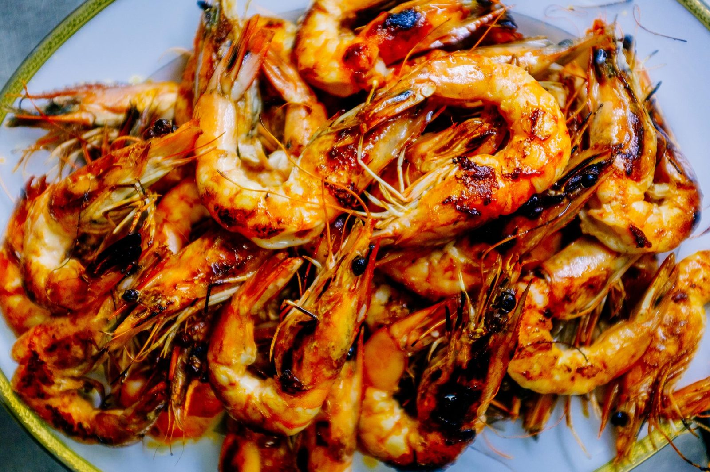
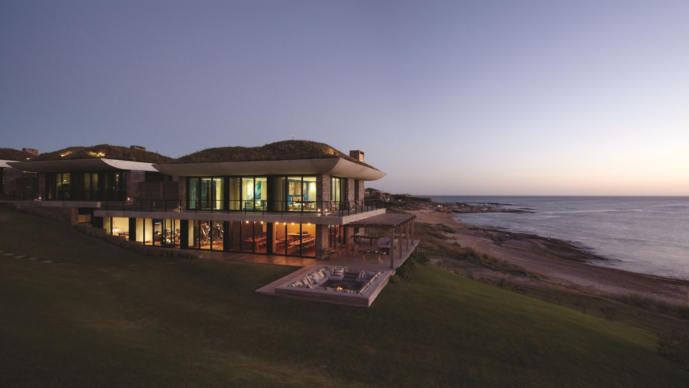
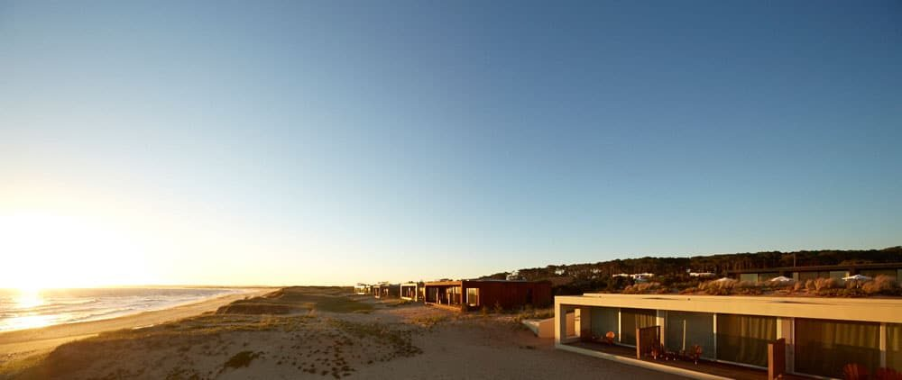
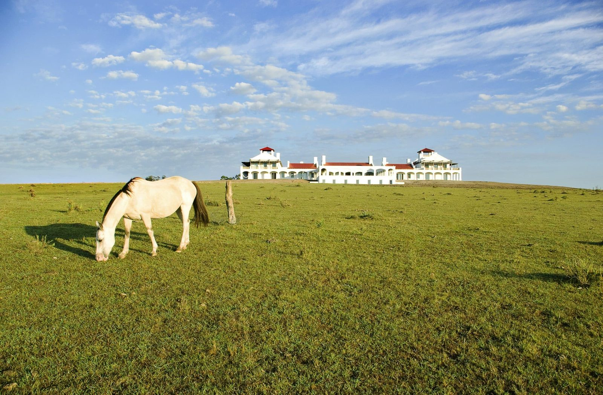
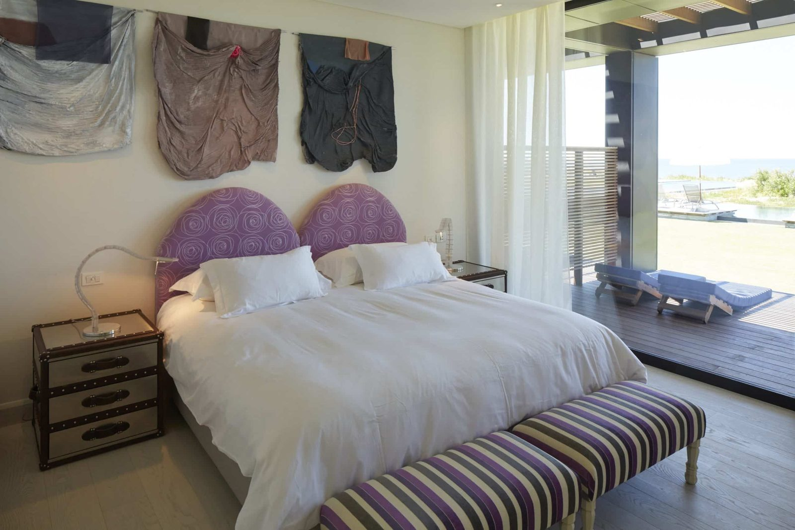
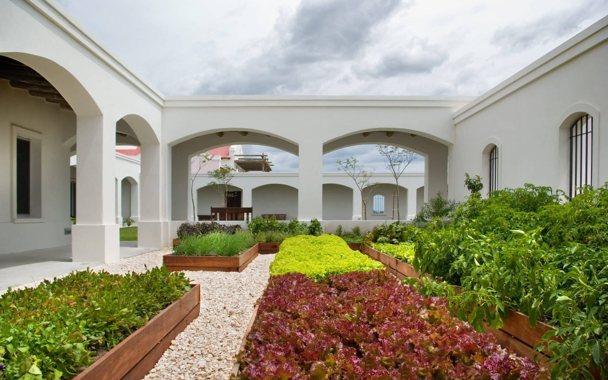

01 · The windDaily
It picks the beach.
A south-west wind flattens Mansa and ruins Brava; a north-easterly does the reverse. Locals check it before deciding anything.
Two hundred people live here in winter. There are no traffic lights, the streets are sand, and the lighthouse still works. Everything VIK does in Uruguay happens within twelve kilometres of it.
José Ignacio is a point of land that pushes into the Atlantic, with a beach on each side of it. The two beaches are not variations of one another — they behave like different bodies of water, and the whole rhythm of a day here follows which one you are on.
Playa Mansa faces west into the bay. The water is flat, the sunsets happen over it, and lunch tends to turn into the whole afternoon. Playa Brava faces the open ocean on the other side: surf, wind, colder water and the light coming in from the east at six in the morning.
Behind the village the coast stops abruptly and the countryside begins — pasture, eucalyptus windbreaks, horses and almost no one. Twenty minutes inland it is a different country, and it is the half of the destination most visitors never see.

Playa Mansa The calm sideFlat water facing west into the bay. The sunsets happen over it and lunch turns into the afternoon.

The point Playa VIK above itWhere the headland pushes into the Atlantic, with the ocean on three sides of the house.

The dunes Bahía sits inside themDesign bungalows set into the sand on Playa Mansa. The easiest of the three with children.

Inland Twenty minutes and it changesPasture, eucalyptus windbreaks, horses and almost no one. The half of the destination most visitors never see.

The bay Flat water, late lightIn January it is still bright at nine in the evening, and the whole coast faces the same way.

The gardens What the kitchens cutHalf a hectare behind the house. Most of what reaches the table on the Estancia comes from it.
Distances below are by road from the village. Nothing on this list needs a plan more elaborate than a car and an afternoon — and your Journey Designer arranges every one of them.
Nothing about José Ignacio holds still across the calendar. In January it is the busiest address on the continent; by April the shops close and the countryside takes over. Neither version is the real one — they are simply two different holidays, and knowing which you want is most of the decision.
A south-west wind flattens Mansa and ruins Brava; a north-easterly does the reverse. Locals check it before deciding anything.
Sunrise belongs to the ocean side, sunset to the bay. Between them the day is genuinely long — in January it is still bright at nine.
Ruta 10 runs the coast and Ruta 9 runs behind it. Everything here sits on one of the two, which is why nothing is more than forty minutes away.
The three houses, the venue, the beach club and the landmarks worth the drive. Touch a name to fly the map, and use the satellite view to see how close together the coast actually is.
Where you sleep changes the holiday; it does not limit it. Dining, wellness, horses, art and the venue run across all three, whichever one you book.
Countryside, architecture and the dunes. A few kilometres apart, and three completely different weeks. The chooser lays the case for each one side by side.
La Susana, Zodiaco, El Asador and CieloMar — open to guests of any house.
Movement, treatment and thermal water, bookable from all three houses.
Riding across the pampas, fishing the lagoon, walking the collection with the house curator, and the culinary programme in the garden. Arranged from wherever you are staying.
If you want the bay, and the light that ends the day over it
If you want the ocean side, and the wind that comes with it
If you want the country behind both, and the horses on it
guestexperience@vikretreats.com